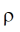
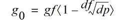
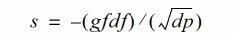
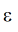
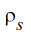

Notes on Parameter Extraction
This section provides some information that can help in setting up parameter extraction algorithms. It describes techniques to get initial values that can then be refined by optimization. It does not give a complete and perfect procedure for parameter extraction. As this section does not deal with the details of the model, but how to determine parameters from measured data, V and I have been used in this section only as the voltage across, and current through, the complete resistor (and not just the core resistor body, as is done in previous sections).
Techniques for extraction of basic parameters, such as rsh, xl, and xw, some temperature coefficients and their geometric scaling, etc. are provided earlier and are not repeated here. Additional extraction techniques for the core bias dependence are provided here.
The fundamental depletion (p-n junction or MOS) pinching component of the model is given earlier. Velocity saturation and self-heating affect the bias dependence for E=VL significantly different from zero. Therefore the basic parameters of the model for one geometry, gf, df, and dp, should come from analysis of data where depletion pinching dominates, i.e. from low V, ideally extrapolated to, or measured (from small-signal AC excitation) at V=0. (The large signal conductanc eg=IV cannot be directly calculated at V=0, but is equal to the small signal conductance g=I/V at that bias).
There are at least three approaches to determine the basic depletion pinching parameters, for diffused resistors. If the conductanc e g is known from measurements at three different biases, then the parameters can be calculated as follows. For these biases, (Vi=V+2V1c for the ith values of V and V1c)
and manipulating the above equation for two pairs of biases, and forming the difference, gives
Starting with an initial estimate of dp = 2 , the equation can be solved using Newton-Raphson iteration. Then
An alternative is to, assuming that the depletion pinching effect is small, initialize gf to g at the lowest (zero) Vi, set dp = 2 , and then calculate an initial df at the highest Vi.A 3 dimensional Newton-Raphson iteration can then be used to solve for gf, df, and dp at the three Vi values.
A direct solution also exists.
and forming the difference between this quantity for two combinations of the selected three bias points gives
These two quantities can be calculated from the Vi and gi data using the above equation
The nonlinearity from the depletion pinching has the greatest sensitivity to dp for small Vi, therefore one bias should be at as small a V as possible (zero, if small-signal conductance is being used as opposed to large signal conductance) and V1c=0.
Preferably data should be taken for 3 or more V1c values (including zero). If such data are available then the other points used for extraction should be at the smallest Vds and the second lowest V1c, and the smallest V and the highest V1c. If data for only two V1c values (including zero) are available, besides the lowest V and lowest V1c point, use the lowest V1c point with a V higher than the smallest value and both small enough to ensure self-heating and velocity saturation effects are negligible and large enough to be sufficiently different from the lowest V value (so as not to be sensitive to measurement noise), and again as a third bias use the smallest V and the highest V1c point.
For poly resistors, the pinching effect is from the depletion region at the bottom of the resistor, and the conductance of a poly resistor is
where X, W and L are the thickness, width, and length of the polysilicon film that makes up the resistor, kSi and kox are the relative dielectric permittivities of silicon and silicon dioxide, Tox is the oxide thickness, 
is the resistivity, and V0=q SiN/C2ox. This can be seen to have the same general form, which is why the basic depletion pinching bias dependence of the
SiN/C2ox. This can be seen to have the same general form, which is why the basic depletion pinching bias dependence of the r3 model is also, with appropriate parameters, suitable for modeling poly resistors.
For typical poly resistors on relatively thick oxides, the V0, which can be identified as the several tens or hundreds of volts, compared to the 1-2V value (twice the built-in potential) for dp resistor. Therefore the resistor conductance is
which, as measured data also shows, has a linear g(V1c) dependence. This means that there are only two independent quantities that can be extracted from measured data, the zero-bias value 
and the slope 
. Yet there are three parameters for the model. Physical quantities are needed to break this indeterminacy.
The value of V0=q
SiN/C2ox can be calculated; however because of incomplete dopant activation this can overestimate its value. It is better to calculate it from the poly sheet resistance
where µ0 and  are the low field mobility and sheet resistance of the poly, respectively. Therefore from the slope and zero-bias conductance
Calculating large signal conductance g=I/V for small V can be problematic; V needs to be small enough so that self- heating and velocity saturation effects do not affect the device, but large enough so that g can be calculated reliably. For poly resistors, there is an alternative method to characterize the depletion pinching parameters. If V1c =0, and V is swept from a negative to a positive value (this is not possible for diffused resistors, as the parasitic junction diodes would become forward biased), then the conductance g(V) has a roughly parabolic shape near V=0. For poly resistors with negative temperature coefficients of resistance, the conductance increases (from self-heating) as the magnitude of the applied V bias increases (for sufficiently high V the conductance starts to decrease from velocity saturation, leading to a horned characteristic in the plot). If the temperature coefficient of resistance is positive, the conductance will decrease as V increases (in roughly the same manner as the effect of velocity saturation, which makes them difficult to distinguish, without including additional data such as the frequency dependence of the output conductance).
For some magnitude of applied V, of both positive and negative signs, the effects of velocity saturation and self-heating should be the same (with the difference noted below). Therefore the plot of g(V) should, to first order, be symmetric about V=0.
However because the V2c bias differs between the positive and negative V cases, the amount of depletion pinching is different, and this introduces a slight asymmetry in the characteristic. (If the currents differ then so will the self-heating, but this should be a second order effect and so is ignored here). Because the effects of velocity saturation and self-heating affect the zero bias conductance and the mobility reduction parts of the model, the ratio of the magnitudes of currents with positive and negative V of equal magnitude cancel these
and therefore reveal the effect of depletion pinching. As with the low V bias analysis above, dp can be calculated and then df , or at least in initial value of it for optimization, can be determined from the slope of the ratio in the above equation versus V (once it stabilizes, the ratio tends to be noisy for low V).
For poly resistors where self-heating dominates the non-linearity, at low V,the g(V)parabolic shape is primarily determined from mobility reduction due to self-heating, therefore
gtha is allowed to be estimated.
One other recommendation is that one basic goal of the model is to model the deviation from linearity (which is important for distortion modeling), and to extract model parameters.
Because of local variation (mismatch), it can be difficult to merge data from different devices for model parameter extraction. Therefore extraction from individual devices can be beneficial. Modeling the deviation from linearity for individual devices does both of these.
Return to top